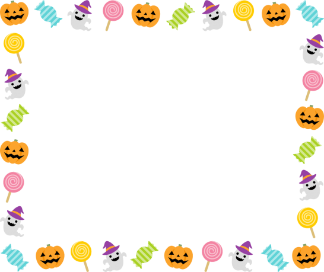
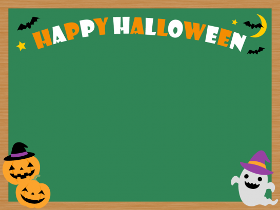
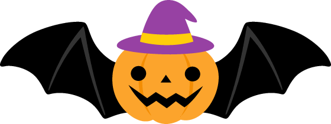

emoji
マウスポインタで範囲指定してコピー、エディタでペーストしてください。
🎃👻🍬🍭👿🍫👹🍪🍩👽🎉💀🧙
画像
サーバ上の「sozai」ディレクトリ(フォルダ)に格納しています。(c)Frame illust かわいい無料イラスト素材集
背景
背景をbodyに設置するときは以下のようにしてください。
body{
background-image:url(sozai/haikei1.png);
background-size:100% 100%;
height:100vh; /*bodyの高さをブラウザの100%の高さにする*/
}- sozai/haikei1.png
- sozai/haikei2.png
 - sozai/haikei3.png
- sozai/haikei4.png
- sozai/haikei5.png
- sozai/haikei6.png
- sozai/haikei7.png

キャラクタをidがbox1の要素に設置するときは以下のようにしてください。
#box1{
background-image:url(sozai/jack1.png);
background-size:100% 100%;
width:100px;height:100px;
}Jack
コウモリ
- sozai/koumori1.png
- sozai/koumori2.png
 - sozai/koumori3.png